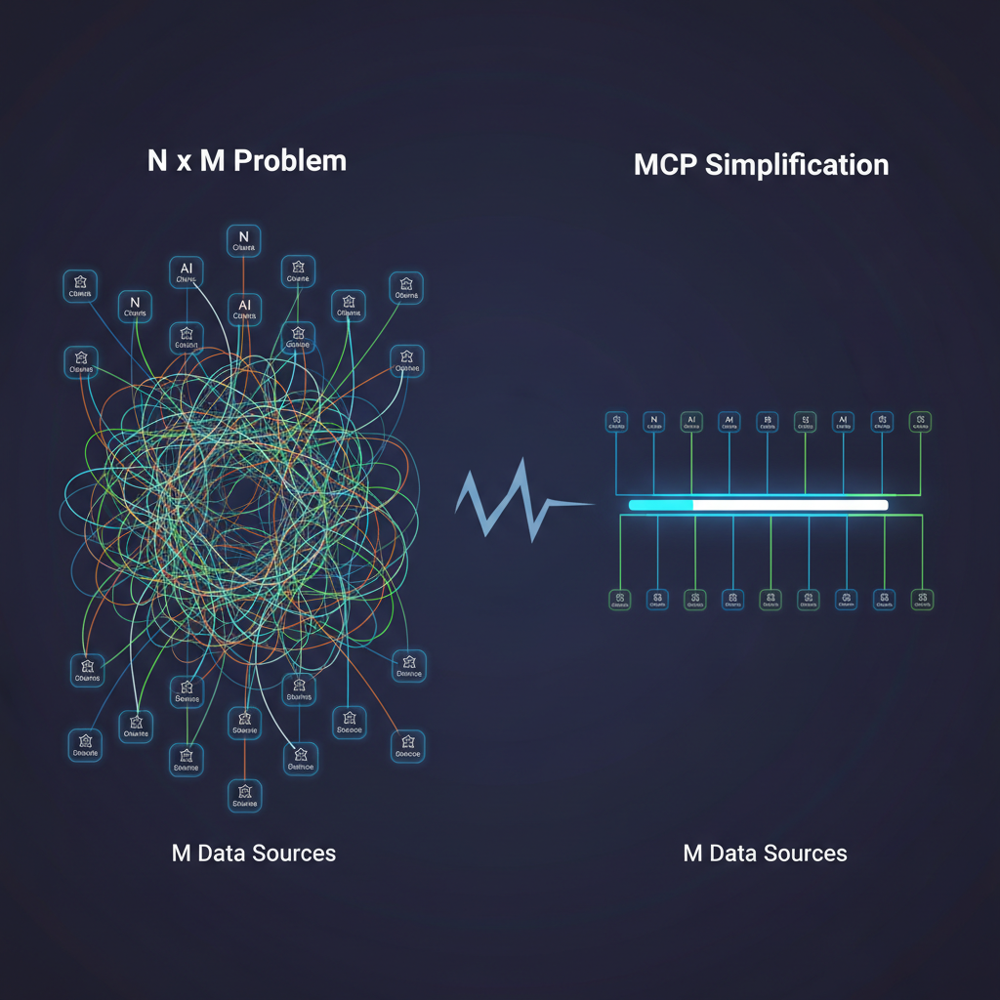
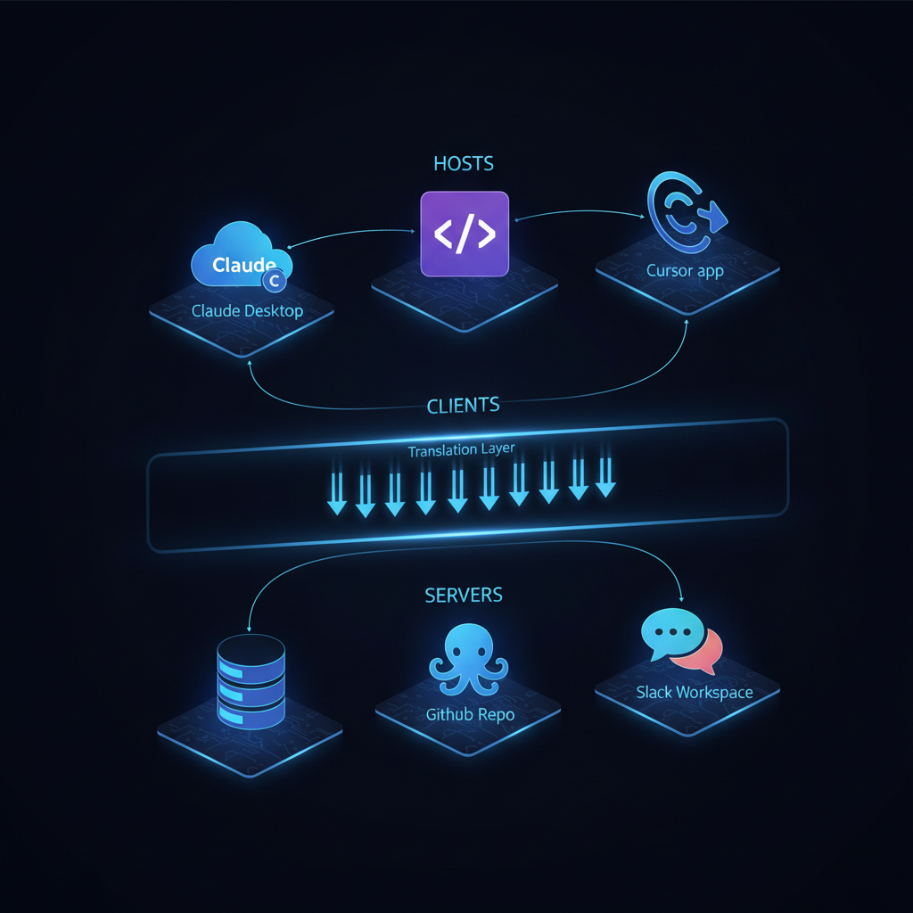
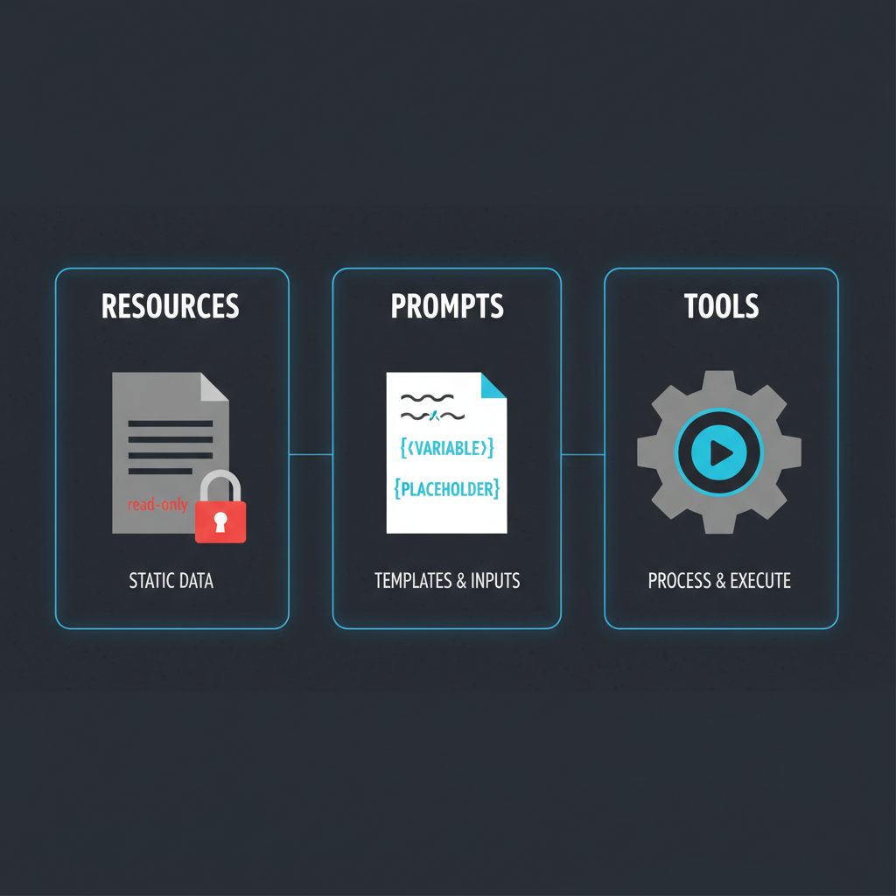

Todo AI tool que você usa está passando fome de "context". Seu AI precisa do seu codebase. Seus custom agents precisam acessar database. Mas levar esse contexto até eles? Aí é onde a coisa fica bagunçada.
Quando LLMs surgiram, cada link entre AI e fonte de dados exigia uma integração custom construída do zero. Em novembro de 2024, a Anthropic lançou o Model Context Protocol (MCP) pra consertar esse problema. Não foi só mais uma ferramenta dev — atacou uma questão fundamental de infraestrutura em AI engineering.
Este post é adaptação enriquecida em PT-BR do "MCP - A Deep Dive" de Eric Roby e Neo Kim, com adições de catálogos atuais de servers (1.000+ públicos), implementações práticas, e o estado do ecossistema em 2026.
O problema N×M — por que MCP tinha que existir

Todo AI assistant precisa de context pra ser útil. Claude precisa do seu codebase. ChatGPT pode precisar dos seus arquivos no Google Drive. Custom agents precisam de conexões com database.
Tradicionalmente, cada conexão exige integração custom. Pra construir AI coding assistant você precisa:
- Escrever código que conecta na API do GitHub.
- Adicionar autenticação e segurança.
- Converter o formato de dados do GitHub pra algo que sua AI entende.
- Tratar rate limiting, erros, edge cases.
- Repetir tudo isso pra GitLab, Bitbucket, e cada source control.
Esse é o problema N×M: N AI assistants × M data sources = N×M integrações únicas pra construir e manter.
Quando Cursor quer adicionar suporte ao Notion, constrói do zero. Quando GitHub Copilot quer o mesmo, constrói de novo. Esforço de engenharia duplicado em cada plataforma AI.
Limitações fundamentais da abordagem antiga
- Integração estática, build-time: integrações hardcoded. Não dá pra adicionar fonte nova sem updatear a aplicação. Experimentação rápida impossível.
- Segurança app-específica: cada integração reinventa auth, authorization, data protection. Modelos de segurança inconsistentes, attack surface maior.
- Sem descoberta padrão: AI systems não conseguem descobrir o que uma data source pode fazer. Tudo precisa ser hardcoded. Difícil criar agents que se adaptam.
Resultado: ecossistema fragmentado, inovação travada por integration work, usuários esperando conexões oficiais.
A analogia do USB-C
A melhor forma de pensar em MCP é como porta USB-C:
Antes do USB: mouse com PS/2. Impressora com paralelo. Câmera com cabo proprietário. Computador precisava de porta específica pra cada device. Maker de cada device tinha que descobrir como conectar em cada computador.
Com USB-C: tudo usa porta padrão. Computador precisa de uma porta USB-C — não importa se você está conectando HD ou microfone, ele só "fala USB". Device precisa de porta USB-C — não importa se é Mac, PC ou iPad. Resultado: você conecta qualquer coisa em qualquer coisa, instantaneamente.
MCP é o USB-C dos LLMs. Um único protocolo entre AI models e data sources.
Como MCP resolve N×M
Solução: defina um protocolo único que funcione em todos os sistemas. Em vez de construir N×M integrações, você constrói N clients (um por AI app) e M servers (um por data source). Trabalho total cai de N×M pra N+M.
Quando um AI assistant novo quer suportar todas as fontes existentes, só precisa implementar o MCP client protocol uma vez. Quando uma data source nova quer ficar disponível pra todos os AI assistants, só precisa implementar o MCP server protocol uma vez.
Duas features arquiteturais críticas
1. Dynamic Capability Discovery
Em integrações tradicionais, a AI app precisa saber detalhes da data source antecipadamente. Se a API muda, a app quebra.
MCP inverte. Usa modelo de "handshake": quando AI conecta num MCP server, pergunta "o que você consegue fazer?". Server retorna lista de resources e tools disponíveis em tempo real.
Resultado: você adiciona uma nova tool ao seu database server (ex: "Refund User"). AI agent encontra na próxima conexão. Não precisa mudar código na AI app.
2. Decoupling Intelligence from Data
MCP separa o sistema que pensa (AI model) do sistema que sabe (data source):
- Pra Data Teams: constroem MCP servers robustos e seguros pras suas APIs internas, sem se preocupar qual AI model vai usar.
- Pra AI Teams: trocam modelos sem precisar reconstruir integrações.
Isso significa que sua infra não fica obsoleta quando lançam modelo novo. Constrói camada de dados uma vez, funciona com qualquer camada de inteligência.
A arquitetura em 3 camadas

Hosts — user-facing apps
Onde usuários interagem com AI. Exemplos: Claude Desktop, VSCode, Cursor, Claude Code CLI, custom agents. Hosts orquestram a experiência inteira:
- Interpretam o prompt do usuário.
- Decidem se dados externos ou tools são necessários.
- Criam e gerenciam clients internos (um por server conectado).
Clients — protocol-speaking connection managers
Rodam dentro dos hosts. Cada client mantém conexão 1:1 dedicada com um único MCP server. São a camada de tradução — convertem requests abstratos do AI em mensagens MCP claras (tools/call, resources/read).
Clients gerenciam o lifecycle inteiro da sessão: connection drops, reconnections, state. Quando conexão começa, fazem capability negotiation — perguntam ao server quais tools, resources e prompts ele oferece.
Servers — onde dados moram
Conectam a sistemas reais: PostgreSQL, GitHub, Slack workspace, file system, qualquer API. Traduzem requests MCP em operações nativas (ex: MCP read → SQL SELECT).
Servers podem rodar localmente (no laptop do usuário, pra acesso privado) ou remotamente (cloud service compartilhado). Suportam stdio (local) e HTTP+SSE (remoto).
Os 3 primitives do MCP

1. Resources — dados read-only
Contexto controlado pela aplicação. Dados que o AI lê mas não muda:
- Query results de database.
- Arquivos do file system.
- API responses de web service.
- Documentação ou knowledge base articles.
Cada resource tem URI única (ex: file:///home/user/project/README.md, github://repo/owner/issue/123).
2. Prompts — templates reutilizáveis
Templates de instrução com variáveis. Parametrized prompts compartilháveis entre apps. Usuários e aplicações invocam prompts com valores diferentes pra code, focus areas.
Padronizam workflows comuns. Facilitam compartilhar técnicas eficazes de prompting. Ex: code-review prompt que aceita language e focus_area.
3. Tools — capacidades executáveis
Funções que o AI chama pra executar ações no mundo real:
create_github_issue(repo, title, body)execute_sql(query)send_slack_message(channel, text)read_file(path)
Cada tool tem schema JSON definindo inputs/outputs. AI escolhe qual chamar baseado na meta. Tools são o que tornam MCP poderoso (e perigoso) — precisam de scoping rigoroso, autenticação, e validation.
O ecossistema MCP em 2026
Em 18 meses, MCP passou de "anúncio Anthropic" pra padrão de facto da indústria. OpenAI, Google, Microsoft, e dezenas de outros adotaram. Hoje há mais de 1.000 MCP servers públicos.
Servers oficiais e populares
- Repo oficial: GitHub, GitLab, PostgreSQL, SQLite, Filesystem, Brave Search, Puppeteer, Slack, Google Drive, Memory.
- Awesome MCP Servers: catálogo curado com 500+ servers.
- mcp.so: diretório searchable.
- Composio: 300+ tools enterprise (Jira, Linear, Notion, Salesforce, HubSpot) com auth gerenciada.
Hosts que falam MCP nativo
- Claude Code (Anthropic) — suporte MCP first-class.
- Cursor — config via
.cursor/mcp.json. - Cline (VSCode extension).
- Goose (Block).
- Continue.
- Zed (editor com agents).
SDKs oficiais
- TypeScript SDK — o mais maduro.
- Python SDK.
- SDKs comunitários: Go, Rust, Java, C#, Ruby.
Construindo seu primeiro MCP server (em 50 linhas)
Em TypeScript, um server mínimo com 1 tool:
import { Server } from "@modelcontextprotocol/sdk/server/index.js";
import { StdioServerTransport } from "@modelcontextprotocol/sdk/server/stdio.js";
const server = new Server({ name: "my-server", version: "1.0.0" }, {
capabilities: { tools: {} }
});
server.setRequestHandler("tools/list", async () => ({
tools: [{
name: "greet",
description: "Greet a person by name",
inputSchema: {
type: "object",
properties: { name: { type: "string" } },
required: ["name"]
}
}]
}));
server.setRequestHandler("tools/call", async (request) => {
if (request.params.name === "greet") {
return { content: [{ type: "text", text: `Hello, ${request.params.arguments.name}!` }] };
}
});
await server.connect(new StdioServerTransport());Conecta em Claude Desktop adicionando ao ~/.config/claude/claude_desktop_config.json:
{
"mcpServers": {
"my-server": {
"command": "node",
"args": ["/path/to/my-server.js"]
}
}
}Reinicie Claude Desktop, e seu tool aparece automaticamente.
O que veio depois — extensões além do core
MCP Resources com subscriptions
Resources podem agora notificar clients quando mudam (ex: arquivo editado, row de DB updateado). Reduz polling.
MCP Roots — escoping de filesystem
Host informa ao server quais diretórios são "acessíveis". Server limita operações a esses roots. Importante pra security em hosts multi-tenant.
Sampling — server pede ao client pra inferir
Server pode solicitar que o client (host) rode inferência LLM pra ele. Inverte o fluxo normal — útil pra servers que precisam de "thinking" sem ter chave de API própria.
HTTP+SSE transport pra remote servers
Inicialmente MCP era só stdio (local). Agora HTTP+SSE permite remote MCP servers — cloud services compartilhados, multi-tenant, com OAuth.
Armadilhas e patterns de produção
- Não dê tool de DELETE/DROP sem human-in-the-loop. AI pode invocar com argumentos errados. Pattern: tool "prepara" ação, posta pra approval, executa após sim humano.
- Auth via env vars ou secret manager. Nunca hardcode tokens no MCP server config.
- Rate limit por server. Especialmente pra tools que chamam APIs externas pagas.
- Logging estruturado. Toda
tools/calldeve ser auditável (quem, quando, com qual argumento, resultado). - Versionamento de tool schema. Mudar input schema quebra agents existentes — versione (
create_issue_v2) em vez de modificar. - Server scopes via Roots. Servidor de filesystem deve respeitar roots fornecidos. Acesso fora = security incident.
- Test em isolamento: rode MCP server standalone com inspector (
npx @modelcontextprotocol/inspector) antes de conectar em host real.
Quando MCP faz sentido (e quando não)
Use MCP quando:
- Você quer mesma integração funcionando em Claude, Cursor, custom agent.
- Acesso a dados que mudam frequentemente (DB, APIs).
- Multi-tool setup onde dynamic discovery economiza setup.
- Quer separar logic de tools de logic de agent (data team vs AI team).
Pode dispensar quando:
- Single-app, single-tool, sem reuso planejado.
- Latência ultra-crítica (overhead MCP > 10ms).
- Tool já existe como SDK nativo no modelo (ex: built-in file editor do Claude Code).
O que vem aí em MCP
- Registries oficiais com signed servers (verificação de identidade do publisher).
- Marketplaces com servers comerciais (estilo VSCode extensions).
- MCP Gateways — proxy reverso pra múltiplos servers com auth centralizada (Composio é isso, basicamente).
- Tool composition nativo — servers chamando outros servers.
- Streaming responses pra tools que retornam dado contínuo (logs, métricas).
Conclusão
MCP não é "mais um protocolo". É a fundação compartilhada que finalmente desbloqueia agents reais em produção. Sem ele, todo agent novo é cliente HTTP de propósito específico recriando integrações da estaca zero. Com ele, qualquer agent novo pluga em qualquer data source sem código adicional do lado da AI app.
É um daqueles padrões que parecem óbvios em retrospecto — e que vão definir como AI agents são construídos pela próxima década. Se você está construindo qualquer coisa com LLM em 2026, aprender MCP é não-negociável. A boa notícia: o SDK é simples, há 1.000+ servers pra estudar, e o tooling melhora toda semana.
Fonte original: "MCP - A Deep Dive: Understanding Model Context Protocol" por Eric Roby e Neo Kim, publicado em The System Design Newsletter em 26 de dezembro de 2025. Esta adaptação em PT-BR cobre a parte gratuita (problema N×M, USB-C analogy, arquitetura 3-layer, 3 primitives) e expande pesadamente com ecossistema 2026, código de exemplo, patterns de produção, e roadmap futuro. Recomendo o site oficial do MCP, o canal @codingwithroby do Eric, e o repo oficial de servers pra começar.